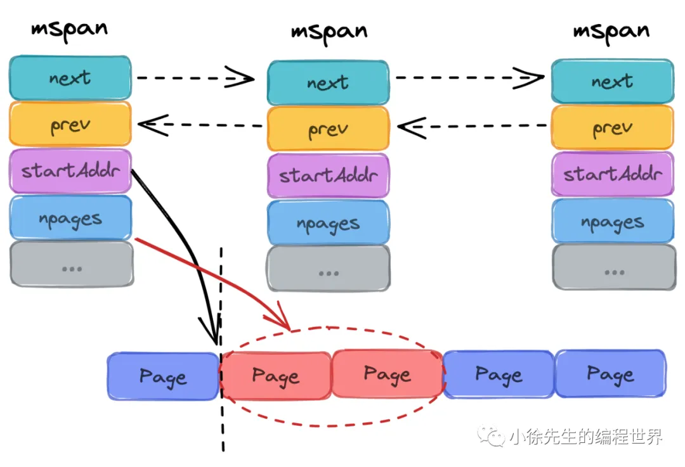
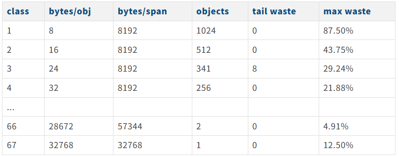
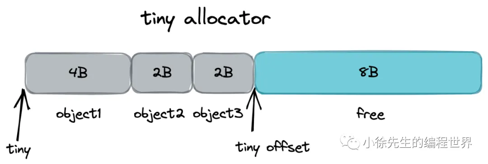

- mcache: 每个p自己的缓存,各种规格的mspan都缓存一份.不需要锁
- mcentral: 某种特定规格的mspan的集合,如果p自己的缓存使用完了,就到mcentral里获取.需要锁.
- mheap: 如果mcentral也没有了,就要到mheap申请,这里必须严格加锁,性能最慢.管理的是堆和页,而不是mspan.
- 如果mheap也没有了,就得向操作系统申请虚拟内存
内存模型
回顾操作系统
- 操作系统中经典的多级存储模型设计.
- 多级模型:根据读取速度\空间大小\价格的不同
- 寄存器
- 高速缓存
- 内存
- 磁盘
- 动态切换
- 多级模型:根据读取速度\空间大小\价格的不同
- 虚拟内存与物理内存:
- 在用户与硬件间添加中间代理层（没有什么是加一个中间层解决不了的）
- 优化用户体验（进程感知到获得的内存空间是“连续”的）
- “放大”可用内存（虚拟内存可以由物理内存+磁盘补足，并根据冷热动态置换，用户无感知）
- 分页管理:
- 操作系统中通常会将虚拟内存和物理内存切割成固定的尺寸，于虚拟内存而言叫作“页”，于物理内存而言叫作“帧”，原因及要点如下：
- 提高内存空间利用（以页为粒度后，消灭了不稳定的外部碎片，取而代之的是相对可控的内部碎片）
- 提高内外存交换效率（更细的粒度带来了更高的灵活度）
- 与虚拟内存机制呼应，便于建立虚拟地址→物理地址的映射关系（聚合映射关系的数据结构，称为页表）
- linux 页/帧的大小固定，为 4KB（这实际是由实践推动的经验值，太粗会增加碎片率，太细会增加分配频率影响效率）
- 操作系统中通常会将虚拟内存和物理内存切割成固定的尺寸，于虚拟内存而言叫作“页”，于物理内存而言叫作“帧”，原因及要点如下：
go内存模型
核心要点:
- 空间换时间,一次缓存,多次复用.
因为申请内存的操作很重,那么一次多申请一些.
Golang中的堆mheap:
- 对操作系统而言,这是用户进程中缓存的内存
- 对于go进程内部,堆是所有对象的内存起源
- 多级缓存,实现无/细锁化
堆是Go运行时最大的临界共享资源,这意味着每次存取都要加锁.
Golang在堆之上依次细化力度:
- mheap:全局内存起源,访问要加全局锁
- mcentral:每种对象大小规格(全局共划分为68种)对应的缓存,锁的粒度也仅限于同一种规格以内.mcentral是同种规格的mspan连接而成的一个链表
- mcache:每个P持有一份的内存缓存,访问时无锁.
- 多级规格,提高利用率
- page 最小的存储单元.类似于操作系统的分页,但是大小是8kb
- mspan 最小的管理单元 大小为page的整数倍,被划分为从8b到80kb67种不同的规格[一个mspanl里面只有一种规格].[是再划分,和页的大小无关了.划分后的小块叫做object,object的数量叫nelems] 分配对象时，会根据大小映射到不同规格的 mspan，从中获取空间.
- 多规格 mspan 下产生的特点：
- 根据规格大小，产生了等级的制度
- 消除了外部碎片，但不可避免会有内部碎片.宏观上能提高整体空间利用率
- 正是因为有了规格等级的概念，才支持 mcentral 实现细锁化,因为申请的是不同规格的mspan,不需要去全局争夺锁.
- 多规格 mspan 下产生的特点：
核心概念梳理
内存单元mspan
- mspan 是 Golang 内存管理的最小单元
- mspan 大小是 page 的整数倍（Go 中的 page 大小为 8KB），且内部的页是连续的（至少在虚拟内存的视角中是这样）
- 每个 mspan 根据空间大小以及面向分配对象的大小，会被划分为不同的等级
- 同等级的 mspan 会从属同一个 mcentral，最终会被组织成链表，因此带有前后指针（prev、next）
- 由于同等级的 mspan 内聚于同一个 mcentral，所以会基于同一把互斥锁管理
- mspan 会基于 bitMap 辅助快速找到空闲内存块（块大小为对应等级下的 object 大小）此时需要使用到 Ctz64 算法.
- 
type mspan struct {
// 标识前后节点的指针
next *mspan
prev *mspan
// ...
// 起始地址
startAddr uintptr
// 包含几页，页是连续的
npages uintptr
// 标识此前的位置都已被占用
freeindex uintptr
// 最多可以存放多少个 object
nelems uintptr // number of object in the span.
// bitmap 每个 bit 对应一个 object 块，标识该块是否已被占用
allocCache uint64//64位,每一位代表一个格子的状态0为占用1为空.cpu有一条特殊指令可以对二进制进行O(1)的查询找到二进制中的1的位置
//如果这 64 位都用完了（全是 0），再从大位图中加载下 64 位进来补充
// ...
// 标识 mspan 等级，包含 class 和 noscan 两部分信息
//size class 前7位 可以查询这里面划分的object大小
//noscan 最后一位 是免扫描标记,gc看到这个标记,就知道里面存的对象不包含指针,不需要沿着指针打开往下扫描.
spanclass spanClass
// ...
}内存单元等级spanClass
mspan 根据空间大小和面向分配对象的大小，被划分为 67 种等级（1-67，实际上还有一种隐藏的 0 级，用于处理更大的对象，上不封顶）

- class: mspan等级标识
- bytes/obj：该大小规格的对象会从这一 mspan 中获取空间. 创建对象过程中，大小会向上取整为 8B 的整数倍，因此该表可以直接实现 object 到 mspan 等级 的映射
- bytes/span：该等级的 mspan 的总空间大小
- object：该等级的 mspan 最多可以 new 多少个对象，结果等于 （3）/（2）
- tail waste：（ 3）/（2）可能除不尽，于是该项值为（3）%（2）
- max waste：通过下面示例解释：
以 class 3 的 mspan 为例，class 分配的 object 大小统一为 24B，由于 object 大小 ⇐ 16B 的会被分配到 class 2 及之前的 class 中，因此只有 17B-24B 大小的 object 会被分配到 class 3.
最不利的情况是，当 object 大小为 17B，会产生浪费空间比例如下：
((24-17)*341 + 8)/8192 = 0.292358 ≈ 29.24%
除了上面谈及的根据大小确定的 mspan 等级外，每个 object 还有一个重要的属性叫做 nocan，标识了 object 是否包含指针，在 gc 时是否需要展开标记.
在 Golang 中，会将 span class + nocan 两部分信息组装成一个 uint8，形成完整的 spanClass 标识. 8 个 bit 中，高 7 位表示了上表的 span 等级（总共 67 + 1 个等级，8 个 bit 足够用了），最低位表示 nocan 信息.
线程缓存mcache
（1）mcache 是每个 P 独有的缓存，因此交互无锁
（2）mcache 将每种 spanClass 等级(是否scan算作同一个等级的两种mspan)的 mspan 各缓存了一个，总数为 2（nocan 维度） * 68（大小维度）= 136
（3）mcache 中还有一个为对象分配器 tiny allocator，用于处理小于 16B 对象的内存分配
const numSpanClasses = 136
type mcache struct {
// 微对象分配器相关
tiny uintptr
tinyoffset uintptr
tinyAllocs uintptr
// mcache 中缓存的 mspan，每种 spanClass 各一个
alloc [numSpanClasses]*mspan
// ...
}中心缓存mcentral
（1）每个 mcentral 对应一种 spanClass
（2）每个 mcentral 下聚合了该 spanClass 下的 mspan
（3）mcentral 下的 mspan 分为两个链表，分别为有空间 mspan 链表 partial 和满空间 mspan 链表 full
（4）每个 mcentral 一把锁
type mcentral struct {
// 对应的 spanClass
spanclass spanClass
// 有空位的 mspan 集合，数组长度为 2 是用于抗一轮 GC
partial [2]spanSet
// 无空位的 mspan 集合
full [2]spanSet
}全局堆缓存mheap
• 对于 Golang 上层应用而言，堆是操作系统虚拟内存的抽象
• 以页（8KB）为单位，作为最小内存存储单元
• 负责将连续页组装成 mspan
• 全局内存基于 bitMap 标识其使用情况，每个 bit 对应一页，为 0 则自由，为 1 则已被 mspan 组装
• 通过 heapArena 聚合页，记录了页到 mspan 的映射信息（2.7小节展开）
• 建立空闲页基数树索引 radix tree index，辅助快速寻找空闲页（2.6小节展开）
• 是 mcentral 的持有者，持有所有 spanClass 下的 mcentral，作为自身的缓存
• 内存不够时，向操作系统申请，申请单位为 heapArena（64M）
type mheap struct {
// 堆的全局锁
lock mutex
// 空闲页分配器，底层是多棵基数树组成的索引，每棵树对应 16 GB 内存空间
pages pageAlloc
// 记录了所有的 mspan. 需要知道，所有 mspan 都是经由 mheap，使用连续空闲页组装生成的
allspans []*mspan
// heapAreana 数组，64 位系统下，二维数组容量为 [1][2^22]
// 每个 heapArena 大小 64M，因此理论上，Golang 堆上限为 2^22*64M = 256T
arenas [1 << arenaL1Bits]*[1 << arenaL2Bits]*heapArena
// ...
// 多个 mcentral，总个数为 spanClass 的个数
central [numSpanClasses]struct {
mcentral mcentral
// 用于内存地址对齐
pad [cpu.CacheLinePadSize - unsafe.Sizeof(mcentral{})%cpu.CacheLinePadSize]byte
}
// ...
}空闲页索引 pageAlloc
- 数据结构背后的含义
- mheap会基于bitMap标识内存中各页的使用情况,bit位为0代表该页空闲,为1代表该页已被mspan占用
- 每棵基数树聚合了16GB内存空间中各页使用情况的索引信息,用于帮助mheap快速找到指定长度的连续空闲页的所在位置
- mheap持有2的14次方棵基数树,因此索引全面覆盖到2的114次方*16gb=256T的内存空间
- 基数树设定
- 基数树中，每个节点称之为 PallocSum，是一个 uint64 类型，体现了索引的聚合信息，包含以下四部分：
- start：最右侧 21 个 bit，标识了当前节点映射的 bitMap 范围中首端有多少个连续的 0 bit（空闲页）称之为 start；
- max：中间 21 个 bit，标识了当前节点映射的 bitMap 范围中最多有多少个连续的 0 bit（空闲页）称之为 max； - end：左侧 21 个 bit，标识了当前节点映射的 bitMap 范围中最末端有多少个连续的 0 bit（空闲页）称之为 end.
- 最左侧一个 bit，弃置不用

总之就是利用基数树快速查找空闲页
- start：最右侧 21 个 bit，标识了当前节点映射的 bitMap 范围中首端有多少个连续的 0 bit（空闲页）称之为 start；
heapArena
- 每个 heapArena 包含 8192 个页，大小为 8192 * 8KB = 64 MB
- heapArena 记录了页到 mspan 的映射. 因为 GC 时，通过地址偏移找到页很方便，但找到其所属的 mspan 不容易. 因此需要通过这个映射信息进行辅助.
- heapArena 是 mheap 向操作系统申请内存的单位（64MB）
对象分配流程
下面来串联 Golang 中分配对象的流程，不论是以下哪种方式，最终都会殊途同归步入 mallocgc 方法中，并且根据 3.1 小节中的策略执行分配流程：
- new(T)
- &T{} - make(xxxx)
流程总览
在golang中,依据object的大小,将其分为三类
- tiny 微对象(0,16B)
- small 小对象[16B,32KB]
- large 大对象(32KB,∞)
不同类型的对象，会有着不同的分配策略，这些内容在 mallocgc 方法中都有体现.
核心流程类似于读多级缓存的过程，由上而下，每一步只要成功则直接返回. 若失败，则由下层方法兜底.
-
对于微对象的分配流程：
（1）从 P 专属 mcache 的 tiny 分配器取内存（无锁）
（2）根据所属的 spanClass，从 P 专属 mcache 缓存的 mspan 中取内存（无锁）
（3）根据所属的 spanClass 从对应的 mcentral 中取 mspan 填充到 mcache，然后从 mspan 中取内存（spanClass 粒度锁）
（4）根据所属的 spanClass，从 mheap 的页分配器 pageAlloc 取得足够数量空闲页组装成 mspan 填充到 mcache，然后从 mspan 中取内存（全局锁）
（5）mheap 向操作系统申请内存，更新页分配器的索引信息，然后重复（4）. -
对于小对象的分配流程是跳过（1）步，执行上述流程的（2）-（5）步；
-
对于大对象的分配流程是跳过（1）-（3）步，执行上述流程的（4）-（5）步.[mspan最大的规格只有32KB]
主干方法mallocgc
tiny分配
每个 P 独有的 mache 会有个微对象分配器，基于 offset 线性移动的方式对微对象进行分配，每 16B 成块，对象依据其大小，会向上取整为 2 的整数次幂进行空间补齐，然后进入分配流程.
Title
内存分配中,最小的分配单位是八字节,就算只存一个bool,也会给一个八字节的格子.是
mcache先去申请一个普通的 mspan（比如 class 2）然后从里面拿出一个 16B 的块，专门标记为“现在的 tiny block”，然后开始往里面塞东西
Title
编译期结束后,就已经知道要为什么变量申请什么内存.只是把产生的tinyobject变量按照一定的规则塞进mcache的tiny block里面

noscan := typ == nil || typ.ptrdata == 0
// ...
//只收不含指针的微对象
if noscan && size < maxTinySize {
// tiny 内存块中，从 offset 往后有空闲位置
off := c.tinyoffset
// off 此时是经过“对齐算法”调整后的新偏移量
// ...
// 如果当前 tiny 内存块空间还够用，则直接分配并返回
if off+size <= maxTinySize && c.tiny != 0 {
// 分配空间
x = unsafe.Pointer(c.tiny + off)
c.tinyoffset = off + size
c.tinyAllocs++
mp.mallocing = 0
releasem(mp)
return x
}
// ...
}mcache分配
// 根据对象大小，映射到其所属的 span 的等级(0~66）
var sizeclass uint8
// get size class ....
// 对应 span 等级下，分配给每个对象的空间大小(0~32KB)
// get span class
spc := makeSpanClass(sizeclass, noscan)
// 获取 mcache 中的 span
span = c.alloc[spc]
// 从 mcache 的 span 中尝试获取空间
v := nextFreeFast(span)
if v == 0 {
// mcache 分配空间失败，则通过 mcentral、mheap 兜底
v, span, shouldhelpgc = c.nextFree(spc)
}
// 分配空间
x = unsafe.Pointer(v)